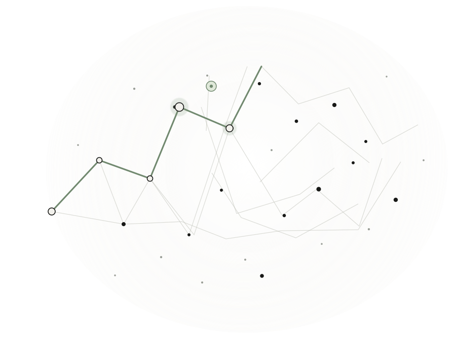

01
Routes that respond
Close an exit or block a corridor. The lowest-cost open route is recalculated on the spot.
Explore how people move through a building, then see the safest open way out when conditions change.

Smart Escape turns a simple building graph into an easy-to-follow route study. Change a condition and the picture updates with it.
Close an exit or block a corridor. The lowest-cost open route is recalculated on the spot.
Rooms, junctions, exits and corridor costs share one clear, interactive view.
Try blocked paths and closed exits in a contained simulation, then restore the original conditions.
Building files are read in your browser. Coordinates place nodes; corridor values determine cost.
Start with a room. Smart Escape compares the available exits using corridor costs, then makes the route easy to read.
Figures describe the included sample and app behavior.
Explore a sample building and see how routes respond when a corridor closes.
Try the route preview Educational simulation · Not for real-world evacuation planning